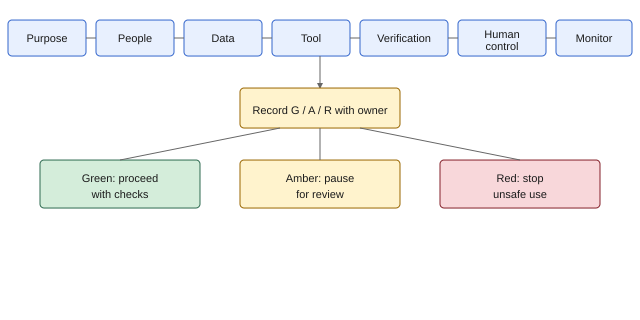

French version prepared with machine assistance; human review by a professional translator is recommended before use.
Guide de décision sur l'utilisation de l'IA
Une page pour référence rapide. Utiliser avec les politiques de votre organisation. L’utilisation en classe ne constitue pas une consultation avec les personnes touchées ou les partenaires.

Équivalent textuel : Objectif, personnes, données, outil, vérification, contrôle humain, suivi, puis enregistrer vert, ambre ou rouge avec un responsable. Tableau complet dans les aides visuelles.
Sept questions avant d’utiliser l’IA
| Étape | Question | Arrêter si… |
|---|---|---|
| 1. Objectif | Quelle tâche l’IA soutient-elle? Quelle est l’alternative manuelle? | L’IA n’apporte guère de valeur ou une méthode manuelle est préférable |
| 2. Personnes | Qui est touché? Les personnes touchées et les partenaires locaux ont-ils été consultés? | Une décision touchant les communautés n’a pas été consultée |
| 3. Données | Quelles données allez-vous entrer? L’outil est-il approuvé pour ces données? | Données personnelles ou sensibles dans un outil non approuvé |
| 4. Outil | Où vont les entrées? Qui peut y accéder? Sont-elles utilisées pour l’entraînement? | L’outil n’est pas approuvé ou les conditions sont floues |
| 5. Vérification | Quelles affirmations nécessitent une source fiable? Comment vérifierez-vous? | Moyen de vérification absent pour les sorties importantes |
| 6. Contrôle humain | Qui approuve? Qui peut annuler? Quel est le recours? | Humain responsable absent pour la décision |
| 7. Suivi | Quelle est la période d’essai? Qu’est-ce qui déclenche un arrêt? | Seuil d’échec et voie d’incident absents |
Décision feu tricolore
Vert : procéder avec vérifications
- Utilisation à faible risque déjà approuvée
- Seulement des données publiques ou internes permises
- Une personne nommée vérifiera les sorties avant action
- La vérification des sources est prévue
Ambre : pause pour examen
- Examen de la vie privée, de la protection ou des partenaires requis
- Approbation de l’outil incertaine
- Les sorties touchent l’accès à l’aide, la sécurité ou les droits
- Consultation incomplète
Rouge : arrêter
- Entrée prohibée (données personnelles ou sensibles dans le mauvais outil)
- Outil non approuvé pour ce type de données
- Décision à enjeux élevés, voie d’examen humain absente
- Recours sécurisé absent si la sortie est erronée
Enregistrer votre décision
Écrire une ligne : Décision (V/A/R), nom du responsable, date du prochain examen.
Arrêter si les sources ne sont pas vérifiées ou si un point d’approbation humaine est manquant.